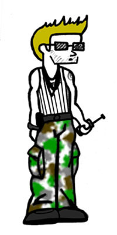

Sven Gyvorski is a quite a sad character... His 25 year old existence revolves around him hangin' out at his brother Pork's high school, where Sven believes that he can pick up chicks... Usually it means that he is hangin' out being a fool, and having Pork call his pager from the phone in the school pretending to be girls, as well as hitting on some of the teachers. He has been band from all school events and places, but somehow manages to get in anyway. Other than that, he just kinda follows around Floyd and drinks cokes with a twist at Ghetto Stan's...